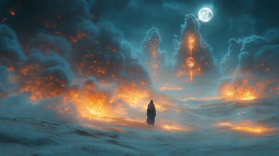

"Whispers of the Jinn" explores the magical and mysterious forces Sinbad encounters during his travels. These unseen spirits, both perilous and wise, guide and test the sailor through enchanted deserts and hidden realms. This track embodies mysticism, suspense, and the supernatural, capturing Sinbad’s encounters with the unseen world where courage and cleverness are the only defenses against the unknown.
Whispers of the Jinn
Voices float on desert air,
Echoes of spirits lurking there.
Shadows twist beneath the moon,
A magic hum, an ancient tune.
Flames of secrets flicker and bend,
The whispers of the Jinn ascend.
In the silence, their eyes see all,
A hidden power waits to call.
Whispers of the Jinn, they haunt the night,
Shaping dreams and shadowed fright.
Mystic forces beyond the veil,
Through fire and wind, the stories sail.
Smoke curls where the lamps ignite,
Forms of mystery, veiled in light.
Desert winds carry a hidden plea,
Boundless magic seeks to free.
Sinbad treads where mortals fear,
Their whispers close, yet none draw near.
Secrets of the unseen world,
In whispered breaths, the fates unfurl.
Whispers of the Jinn, they haunt the night,
Shaping dreams and shadowed fright.
Mystic forces beyond the veil,
Through fire and wind, the stories sail.
Candle flickers cast fleeting forms,
Jinn arise in storm and storms.
Fate entwines with a hidden hand,
Only the brave can understand.
Through the unknown, I carve my way,
Surviving whispers where shadows play.
Ancient spirits of fire and smoke,
Secrets revealed in words unspoke.
Their power vast, their presence near,
Yet courage stands, dispelling fear.
Whispers of the Jinn, they haunt the night,
Shaping dreams and shadowed fright.
Mystic forces beyond the veil,
Through fire and wind, the stories sail.
As dawn arrives, the winds grow still,
The Jinn retreat beyond the hill.
Sinbad sails on, his heart alight,
Guided by courage through the night.